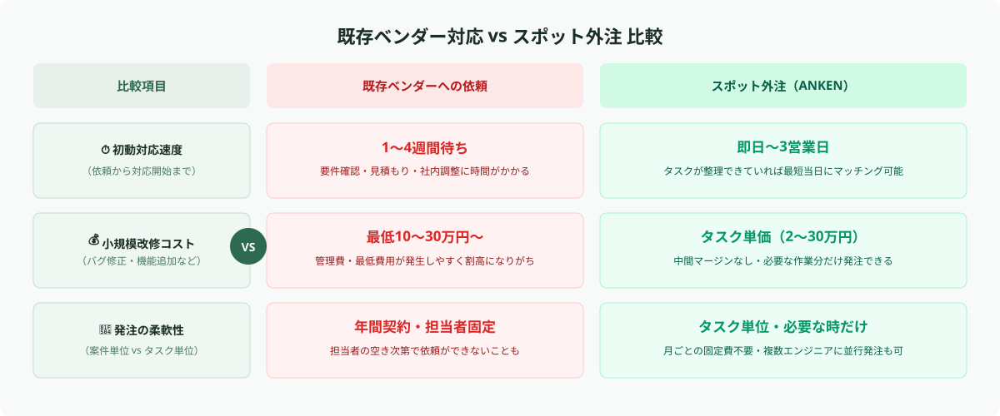
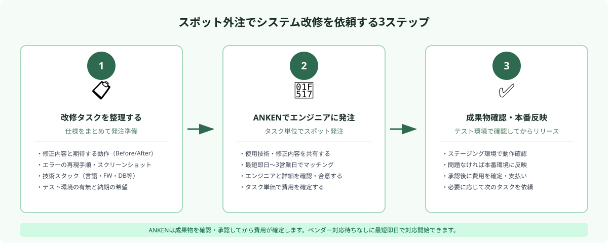

既存ベンダー対応でよくある課題
Webシステムや社内ツールの保守・運用を既存のシステム開発会社に任せている企業の多くが、次のような課題を経験しています。
課題①：小さな修正でもリードタイムが長い
フォームのバリデーションを1つ追加したい、帳票のCSV出力に項目を加えたい——そうした軽微な修正でも、要件確認・見積もり・内部調整のプロセスを経るため、対応完了まで2〜4週間かかるケースは珍しくありません。ビジネスのスピードに開発対応が追いつかない状況が生まれます。
課題②：小規模案件でもコストが高くなる
ベンダーには最低対応単位があるため、実際の作業は数時間でも管理費・調整コストを含めた最低費用（10〜30万円程度）が請求されることがあります。費用対効果が合わず、「改修を諦める」という判断をした経験がある担当者も多いはずです。
課題③：担当エンジニアのリソースが限られている
ベンダーとの契約が特定の担当エンジニアに紐づいている場合、その担当者の空き工数がないと依頼がそもそも通らない、という状況も起こります。担当者の退職・異動で引き継ぎがうまくいかず、対応品質が下がることもあります。
課題④：社内にエンジニアがいない
特に中小企業では、情報システム部門を持たないか、持っていても専門エンジニアが在籍していないケースが多いです。社内で対応できないため、どんな小さな改修もベンダー頼みになり、上記の課題が慢性化します。
スポット外注に向いている改修タスクの種類
スポット外注とは、特定のタスク・作業単位でエンジニアを発注できる依頼形態です。プロジェクト全体ではなく「このバグを直す」「この機能を1つ追加する」という粒度で依頼できるため、既存システムの保守・改修と非常に相性がよいです。

特に以下のようなタスクはスポット外注との相性が高いです。
バグ修正・エラー解消：フォームが送信できない、特定ブラウザで表示崩れが起きる、特定条件でシステムエラーが発生する——こうした不具合の特定・修正は、再現手順と環境情報さえあればスポットエンジニアに依頼しやすいタスクです。
UI/UX改善：入力フォームの項目追加・削除、ボタンの配置変更、モバイル対応（レスポンシブ修正）、テキスト・ラベルの変更など、デザイン・フロントエンド系の修正もスポット外注に向いています。
機能追加：CSVエクスポート機能の追加、検索フィルターの強化、メール通知機能の追加、管理画面への集計グラフ追加など、既存機能の拡張もタスク単位で依頼できます。
外部サービス連携（API接続）：Slack・ChatGPT・Stripe・Zoomなどの外部APIとの連携追加は、既存ベンダーに依頼すると工数見積もりが大きくなりがちです。APIドキュメントと要件が整理できていれば、スポット外注で素早く実装できます。
WordPressのプラグイン対応・カスタマイズ：WordPressサイトのプラグイン競合によるエラー解消、特定ページのテンプレートカスタマイズ、管理画面カスタム投稿タイプの追加など、Web制作の延長線上の改修も依頼しやすい領域です。
- 要件が未確定で「何を作るか自体が決まっていない」段階の案件
- 既存システムの設計ドキュメントが一切なく、コードリーディングから始める必要がある大規模リファクタリング
- 本番環境のみで動作確認を行う必要があり、リリース権限の共有が難しいケース
これらのケースは、まず現状把握・要件整理のコンサルティングから依頼することをお勧めします。
スポット外注で改修を依頼する3ステップ
スポット外注を使って改修を進める流れを3つのステップで整理します。

STEP 1：改修タスクを整理し、仕様をまとめる
発注前に最も重要なのが「何を直してほしいか」を明確にすることです。曖昧な依頼はエンジニアとの認識齟齬を生み、後から追加費用や手戻りの原因になります。最低限、以下の情報を用意してください。
- 修正・追加したい内容を一文で説明できるか（例：「ログイン後のマイページに購入履歴ページを追加したい」）
- 現在の動作と、期待する動作（Before/After形式）
- バグの場合：再現手順・発生頻度・スクリーンショット or エラーメッセージ
- 使用しているシステムの技術スタック（例：PHP / Laravel / MySQL など）
技術スタックが分からない場合は、制作会社から受け取った書類や、サーバー管理画面の情報から確認できることがあります。不明な場合はANKENのエンジニアに相談しながら整理することも可能です。
STEP 2：スポットエンジニアにタスク単位で発注する
タスクの仕様が整理できたら、ANKENでエンジニアに発注します。発注時は「使用技術・フレームワーク」「修正内容と期待する動作」「テスト環境の有無」「納期の希望」を伝えてください。ANKENはスポット案件に対応したエンジニアのみが登録しているため、最短即日〜3営業日でエンジニアと繋がり、対応開始できます。
大規模な改修でなければ、コードベースの確認から修正完了まで1〜5日程度で完了するケースも多いです。
STEP 3：成果物を確認し、本番環境に反映する
エンジニアから成果物（修正済みコード・ドキュメント）が納品されたら、まずステージング環境（テスト環境）で動作確認を行います。期待通りの動作が確認できたら本番環境に反映します。
ステージング環境を持っていない場合は、エンジニアと相談しながら本番反映前の確認方法を決めましょう。スポット外注では作業完了後に確認→承認→支払いという流れで進めるため、納品物に問題があれば修正対応を求めることができます。ANKENでは成果物の確認・承認後に費用を確定する仕組みを採用しています。
費用の目安と発注時のポイント
スポット外注での改修費用は、作業の複雑さとエンジニアのスキルによって幅がありますが、一般的な目安として以下の範囲が参考になります。
バグ修正・エラー解消：2〜10万円程度（再現手順が明確で修正箇所が特定できている場合）
UI変更・テキスト修正：1〜5万円程度（フロントエンドのみで完結する軽微な変更）
機能追加（既存機能の拡張）：5〜30万円程度（既存コードへの影響範囲による）
外部API連携：10〜30万円程度（使用するAPIの複雑さと認証方式による）
既存ベンダーへの依頼と比較すると、中間マージンや管理費が発生しない分、同等の作業でも3〜5割程度コストを抑えられることが多いです。また「管理費込みで最低○○万円」という壁がないため、本当に必要な改修にだけ費用をかけられます。
💡 発注金額が想定より高くなるケース
コードベースの品質が低い・ドキュメントが皆無・テスト環境がないといった状況では、エンジニアが現状把握に余分な時間がかかり、費用が高くなります。「まず現状調査・見積もりだけを依頼する」という使い方でスタートすることもお勧めです。
発注前に準備しておくもの
依頼をスムーズに進めるために、事前に以下を整理しておくと発注後の手戻りが減ります。
① システムの概要情報（技術スタック）
プログラミング言語、フレームワーク、データベース、ホスティング環境（AWSなのかレンタルサーバーなのかなど）を整理しておきます。制作会社から受け取った提案書・設計書があれば、エンジニアへ共有できるよう準備しておきましょう。
② 修正箇所の具体的な説明（スクリーンショット＋文章）
「このボタンを押したら○○というエラーが出る」「この条件のときだけ○○が表示されない」といった形で、文章とスクリーンショットを合わせて用意します。言葉だけより格段に認識齟齬が減ります。
③ ステージング環境（テスト環境）へのアクセス情報
本番環境への直接アクセスは避け、テスト環境で作業・確認できる状態が理想です。ステージング環境がない場合は、その旨を事前に伝えてエンジニアと対応方針を相談してください。
④ 本番環境のリリース権限の確認
修正後のコードを本番に反映するのは自社担当者が行うのか、エンジニアにも権限を付与するのかを事前に決めておきます。FTPアクセス・GitHubリポジトリ・デプロイツールなど、共有方法を確認しておきましょう。
まとめ
社内システム・業務ツールの小規模改修は、既存ベンダーへの依頼だけがオプションではありません。スポット外注を活用することで、タスク単位で必要な改修を素早く・コストを抑えて進めることができます。
ポイントをまとめると、①修正したい内容と期待する動作を事前に整理する、②ANKENでタスク単位のスポット発注をする、③成果物をテスト環境で確認してから本番反映する——この3ステップで、既存ベンダーの対応待ちを解消できます。
「まず自社のシステムに対応できるエンジニアがいるか確認したい」という段階から、ANKENでは無料でご相談いただけます。使用技術・修正内容をお伝えいただければ、対応可能なエンジニアをご紹介します。
ANKENには、Web開発・バックエンド・フロントエンド・WordPress・API連携など、幅広い技術スタックに対応したエンジニアが登録しています。タスク単位で発注できるため、既存ベンダーの対応待ちを解消し、必要な改修を素早く進めることができます。
👉 無料で相談する（システム改修をスポット外注で依頼する）修正内容・使用技術・納期のご希望など、まずはご相談ください。